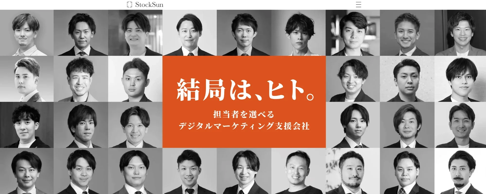
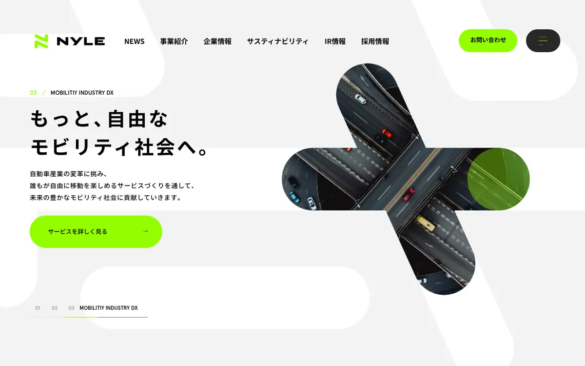
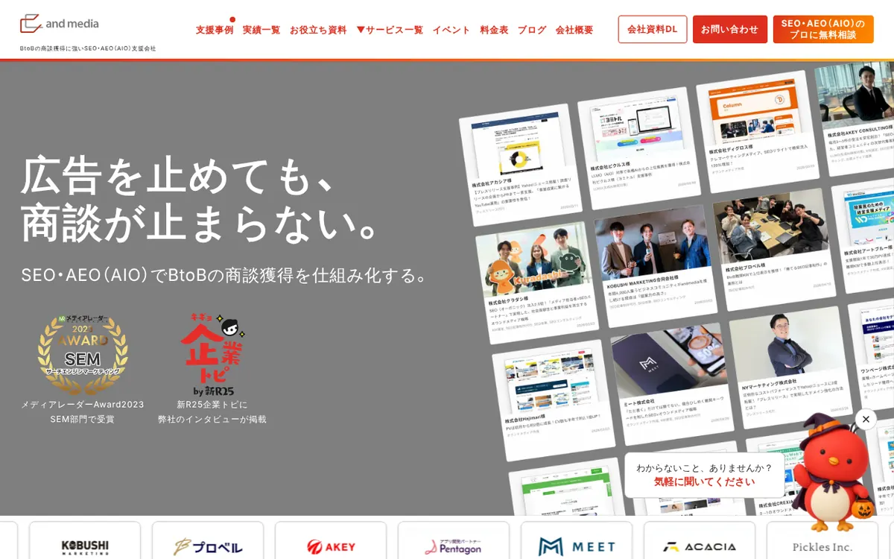
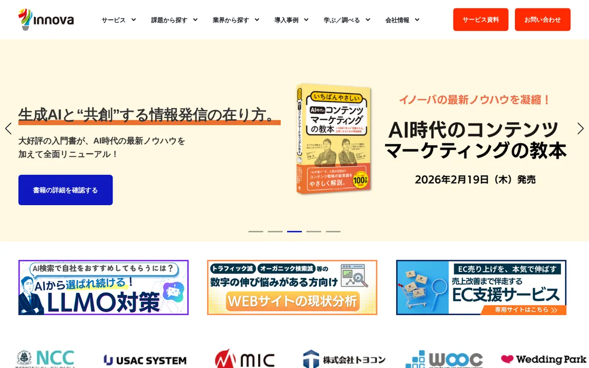
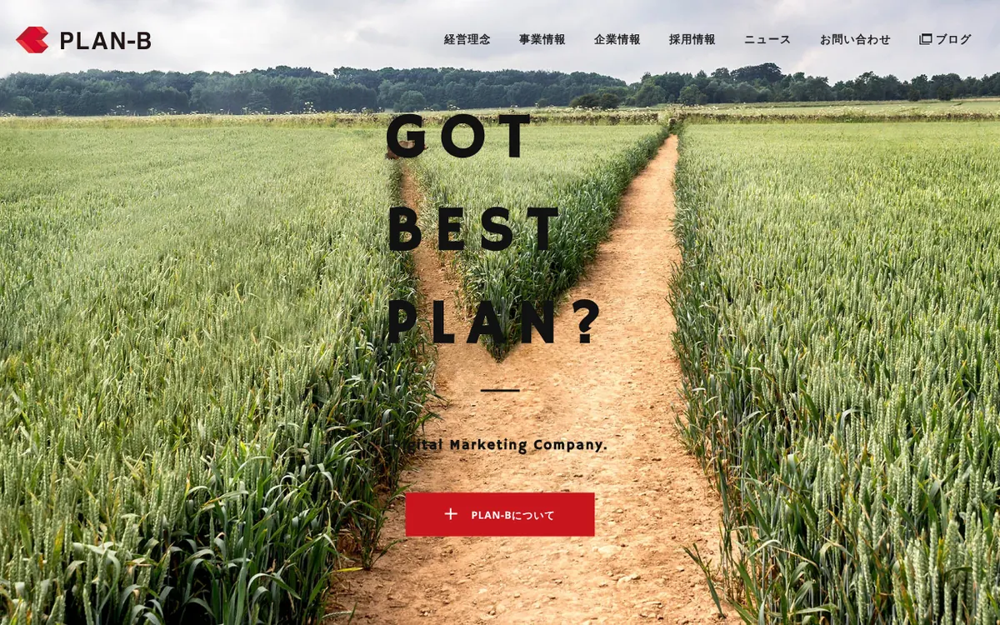
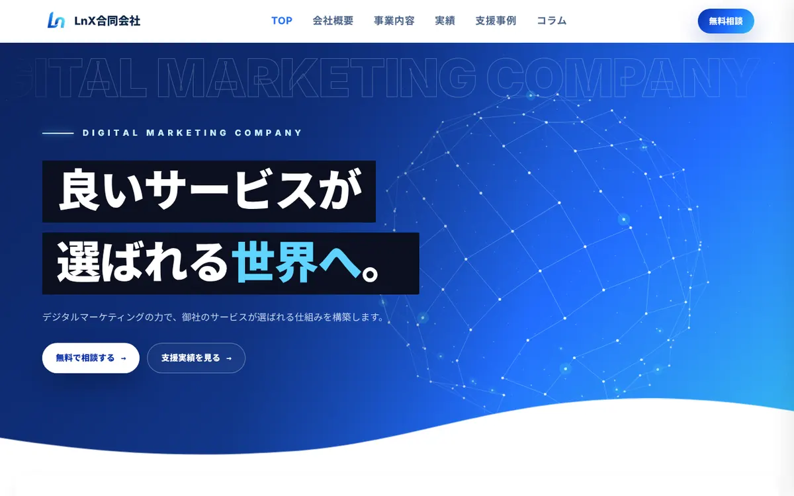
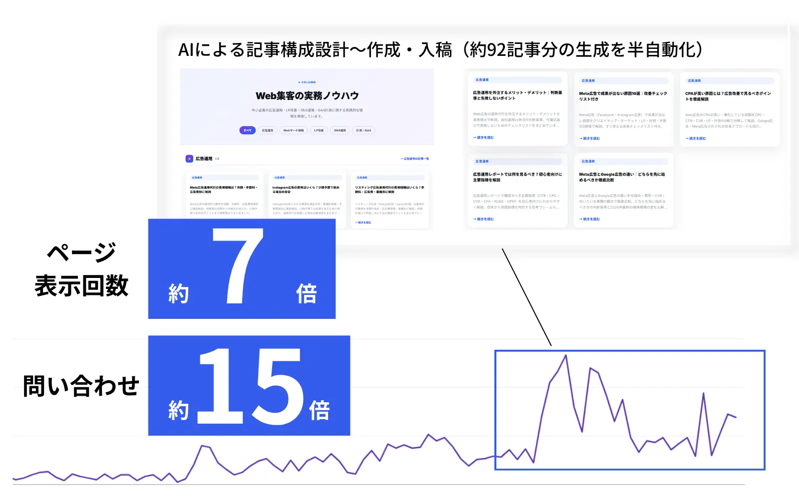

この記事でわかること
- オウンドメディア運用代行おすすめ6社の比較表（支援範囲・費用・最低契約期間・実績）
- 6社それぞれの特徴・向いているケース・注意点（公式サイトのリンク付き）
- 「戦略・コンサル型」「記事制作型」「一括パッケージ型」の3タイプの違い
- 料金の出し方4種を「月8本・6か月」で並べ直した費用の試算
- 見積もりで確認する7項目と、契約前に見ておく著作権・解約・引き継ぎ
- 自社の状況別の選び方と、効果が出るまでの期間の見方
オウンドメディア運用代行は、会社によって「頼める範囲」がまるで違う
結論から言うと、オウンドメディア運用代行は「何を運用と呼ぶか」が会社ごとに違うため、月額の高い安いだけでは比べられません。同じ「運用代行」という言葉でも、戦略設計とレポートだけを担う会社もあれば、記事を1本ずつ納品するだけの会社もあります。
今回、公式ページを開いて確認できた内容を当社なりに整理すると、おおまかに次の3タイプに分かれました。
| タイプ | 中心になる業務 | 向く会社の状況 |
|---|---|---|
| 戦略・コンサル中心型 | KPI・ロードマップ・キーワード設計、月次の分析と改善提案。制作は別契約か、社内で実行 | 書ける人・動ける人が社内にいて、方針と分析の質を上げたい |
| 記事制作中心型 | 構成案・執筆・校正・画像選定までを記事単位で納品 | 戦略は社内で持っていて、本数だけ外に出したい |
| 一括パッケージ型 | 設計から記事制作・入稿・分析・リライトまでを月額でまとめて請ける | 担当者が少なく、メディアを立ち上げて回すところまで任せたい |
多くの会社は複数のタイプにまたがっており、プランによって変わります。自社がどのタイプを必要としているかを先に決めておくと、比較表の読み方が変わります。たとえば社内に編集の担当者がいない会社が、記事単価だけを見て「安い」と決めると、構成の判断や入稿が全部自社に残ります。逆に、すでに編集体制がある会社が一括パッケージを選ぶと、使わない機能に費用を払うことになります。
発注側に実際どれだけ作業が残るかは、SEO・オウンドメディア運用代行に丸投げできるのか？で整理しています。
オウンドメディア運用代行おすすめ6社の比較表
ここからは、オウンドメディアの運用・記事制作を実際に公開している6社を並べます。掲載しているのは、2026年10月13日時点で各社の公式ページを実際に開いて確認できた内容だけです。公開されていない項目は「公開なし」と書き、推測では埋めていません。順位は付けていません。掲載順は料金の公開状況の順で、当社は末尾に置いています。掲載する会社は、競合記事で繰り返し取り上げられている会社のうち、公式ページで料金や契約条件を確認できた会社から選びました。公式サイトを取得できなかった会社は載せていません。
比較の前に。料金を公開していない会社があること自体は減点材料ではありません。サイトの規模や本数で工数が変わるためです。見るべきなのは、「何が月額に含まれるか」を同じ条件で出してもらえるかどうかです。次の表の金額は、同じ物差しでは並べられない点に注意してください。
| 会社（公式ページ） | 支援範囲 | 費用 | 最低契約期間 | 実績（公開値） |
|---|---|---|---|---|
| StockSun株式会社 | 戦略設計（ペルソナ・ジャーニー、KPI・ロードマップ、キーワードの優先順位）／コンテンツ制作（記事制作・リライト、ホワイトペーパー・動画、内部リンク・SEO実装、LLMO対応）／効果測定・改善（月次レポート・定例会） | 税抜の目安で、実行支援のみ月30万円〜／実行＋コンサル月50万円〜／コンサルのみ月25万円〜。固定報酬型が基本 | 実行支援のみ・コンサルのみは3ヶ月〜、実行＋コンサルは6ヶ月〜 | 累計支援社数3,900社以上（2024年実績）、問い合わせ数の平均改善実績3.2倍、平均継続率97%（2025年時点・自社調べ） |
| ナイル株式会社 | SEO記事・コンテンツ制作代行（構成・原稿・SEOチェック・ファクトチェック・監修者アサイン・インタビュー・撮影・図版）／オウンドメディア構築・運用コンサルティング（メディア構築、戦略設計、企画提案、SEOコンサル） | 記事制作代行は要問い合わせ。構築・運用コンサルティングは月70万円〜 | 公開なし | 2007年創業、2,000社超を支援。作成記事1,769本のうち、狙ったキーワードで5位以内が659本（37.2%） |
| and media株式会社 （and Owned） |
競合・市場調査からCV獲得まで。SEO戦略・KW設計、オウンドメディア作成、GA4・Looker Studioの分析基盤、ホワイトペーパー、SEOコンサル、SEO記事制作（月10本）、プレスリリース代行（月1本）、被リンク獲得代行。各施策のスポット依頼も可 | 通常価格は初月95万円・2ヶ月目以降80万円。特別パッケージ価格は月50万円 | 最低3ヶ月、以降は月ごとの更新 | 支援実績150社以上（同ページ内に「50社以上」の記載もあり）、自社メディア30サイト以上、メディアレーダーAward2023 SEM部門受賞 |
| 株式会社イノーバ | BtoB向けのコンテンツマーケティング。SEOコンテンツ作成、ホワイトペーパー、動画、AI活用のコンテンツ内製化支援、Web広告運用支援など | 公開なし | 公開なし（SEO支援は3ヶ月、内製化支援は6ヶ月で体制構築、という目安の記載のみ） | 10年以上のマーケティング支援。事例としてプラス株式会社の獲得リード6倍、コニカミノルタジャパンのPV約10倍（サイト開設から3年） |
| 株式会社PLAN-B | SEO記事制作（構成案・ライティング・校正編集・画像選定）。オプションでキーワード選定、図表、CMS入稿、HTML納品、インタビュー・撮影。運用代行・コンサルのページには対応業務の詳細の記載なし | 記事単価制。ピュアAI1.5万円／AI活用5万円／通常8万円／エンタープライズ10万円／専門家・インタビュー10万円〜（いずれも1記事）。リライト5万円/本〜。運用代行の月額は公開なし | 公開なし（スポット発注は最低50万円、別途進行管理費20%） | 事例として、自然検索流入がパソナ・パナソニック ビジネスサービスで約2,100%超（5年）、野村不動産ソリューションズで150%超（9か月後） |
| LnX合同会社 （SEO・AIO対策／オウンドメディア運用代行） |
SEO/AIO診断、キーワード設計、記事の制作と入稿、内部リンク、構造化データ実装、月次レポートまで一気通貫。実装まで自社で行う | 初期費用30万円＋月額15万円（月8本）／25万円（月16本）／40万円（月30本）。いずれも税別 | 原則6か月 | 自社メディアで約113記事／ページ表示回数約7倍／問い合わせ約15倍 |
※ 各社の情報は2026年10月13日に公式ページを確認したものです。料金・支援範囲は改定される可能性があるため、発注前に必ず各社にご確認ください。順位付けは行っておらず、掲載順は料金の公開状況の順です。
当社の具体的な条件も、他社と同じ粒度で載せておきます。初期費用30万円（税別）には、SEO/AIO診断・キーワード設計・記事テンプレートと入稿フローの実装・構造化データやsitemap自動更新の実装・数値台帳の構築が含まれます。月額は記事入稿の本数に応じて、ライト（月8本／15万円）、スタンダード（月16本／25万円）、フル（月30本／40万円）の3プランで、最低契約期間は原則6か月です。数値が動き始めるのは3〜4か月目が目安のため、この期間を設定しています。他社の提案書や見積もりを並べた状態でのご相談も歓迎です。
噛み合わない領域も正直に書きます。支援社数や受賞歴では、上記の各社に及びません。また当社のページに記載している支援内容は、記事の設計と制作・入稿・内部リンク・構造化データ・レポート・リライトが中心で、取材や撮影、動画、ホワイトペーパー、被リンク獲得、外部メディアでの露出づくりまでを含む全面支援は掲載していません。そうした広い範囲を一度に任せたい場合は、専門の制作体制を持つ会社のほうが噛み合います。当社が得意なのは、数十〜数百ページ規模のコーポレートサイト・オウンドメディアを、診断から記事の量産・実装・改善まで少人数で回す使い方です。
6社それぞれの特徴を個別に見る
表だけでは、各社が何を強みにしていて、どこから先は別の手当てが必要になるのかまでは分かりません。ここからは1社ずつ、公式サイトで確認できた特徴・向いているケース・注意点を整理します。繰り返しになりますが順位ではありません。
StockSun株式会社

公式サイト：https://stock-sun.com/ ／ サービスページ：コンテンツマーケティングコンサルティング｜StockSun
今回の6社の中で、契約形態ごとの月額と最低契約期間を並べて公開しているのが特徴です。実行支援のみ（月30万円〜・3ヶ月〜）、実行＋コンサル（月50万円〜・6ヶ月〜）、コンサルのみ（月25万円〜・3ヶ月〜）の3パターンで、いずれも税抜の目安です。料金体系は固定報酬型が基本で、成果報酬型の記載はありません。
業務は「戦略設計」「コンテンツ制作」「効果測定・改善」の3本柱です。制作側には記事制作・リライトに加え、内部リンクやSEO実装、LLMO（生成AI）対応、ホワイトペーパーや動画まで挙がっています。実績は累計支援社数3,900社以上（2024年実績）、問い合わせ数の平均改善実績3.2倍とされ、ページには「成果は事業環境により異なります」との注記があります。同社の所在地は東京都新宿区です。
向いているケース：社内の体制に合わせて「実行まで任せる」「方針だけ見てもらう」を選び分けたい。料金の目安を相談前に把握しておきたい。
注意点：見積もりは無料相談で案内される形で、解約条件はサービスページに記載がありませんでした。月額に含まれる記事本数も公開されていないため、本数を条件にして見積もりを取る必要があります。
ナイル株式会社

公式サイト：https://nyle.co.jp/ ／ サービスページ：コンテンツ制作代行サービス｜ナイルのSEO相談室
SEOの運営メディアを持つ会社で、記事制作代行と、メディア全体の構築・運用コンサルティングを別メニューとして持っている点が特徴です。記事制作は構成作成から原稿作成、SEOチェック、ファクトチェック、監修者のアサイン、インタビュー、撮影、図版作成まで。本数の制限はなく、1本からのトライアルも、100本を超える発注も可能と記載されています。依頼側のチェックは構成・初稿・調整稿の3回です。
料金は、構築・運用コンサルティングが月70万円〜。記事制作代行は要問い合わせで、契約期間は記載がありません。実績としては、作成した記事1,769本のうち狙ったキーワードで5位以内が659本（37.2%）、1位が12.4%という数字を公開しています。同社は2007年創業、本社は東京都品川区東五反田です。
向いているケース：まず1本から品質を見て、そこから本数を増やしたい。メディアの構築から戦略設計まで、コンサルとして入ってほしい。
注意点：記事制作の金額と契約期間は公式ページから確認できません。コンサルティングの月額は、制作費がどこまで含まれるかをページ上では判断できないため、見積もりで切り分けを確認してください。
and media株式会社

公式サイト：https://andmedia.co.jp/ ／ サービスページ：and Owned（オウンドメディア運用代行）｜and media
施策ごとの通常価格と、それをまとめた特別パッケージ価格を両方載せているのが他社と違う点です。初月はSEO戦略・KW設計30万円、オウンドメディア作成30万円、データ分析基盤構築20万円、ホワイトペーパー作成15万円で95万円。2ヶ月目以降はSEOコンサル30万円、SEO記事制作10本30万円、プレスリリース代行5万円、被リンク獲得代行15万円で80万円。これを特別パッケージ価格として月50万円で提供する、とされています。最低契約期間は3ヶ月、以降は月ごとの更新です。
ライターは「100名の応募に対し1名のみ採用」と公式ページに記載があり、自社でSEOチェックリストを使って教育するとしています。各施策のスポット依頼も可能です。支援実績は「150社以上」とある一方、同じページ内に「50社以上」という記載もあるため、数字を比べるときは前提を確認してください。なお、料金ページ上のオウンドメディア制作単体は、簡易が30万円（1サイト）、リッチが50万円〜と記載されています。
向いているケース：設計・制作・被リンクまで一社でまとめて動かしたい。パッケージ価格で月額を固定したい。
注意点：特別パッケージ価格が適用される条件はページから読み取れません。通常価格とパッケージ価格のどちらで見積もられるかを最初に確認してください。
株式会社イノーバ

公式サイト：https://innova-jp.com/ ／ サービスページ：集客・リード獲得＆コンテンツ制作｜イノーバ
BtoBのコンテンツマーケティングを軸にした会社です。サービスページには、初期設計＋SEOコンテンツ作成、ホワイトペーパー制作、動画コンテンツ制作、Web広告運用支援、そしてAI活用のコンテンツ内製化支援が並んでいます。SEO支援は3ヶ月、内製化支援は6ヶ月で体制を構築する、という目安が記載されています。
事例として、プラス株式会社の獲得リード数6倍、コニカミノルタジャパンのPV数約10倍（サイト開設から3年）が掲載されています。料金・契約期間・所在地はサービスページに記載がなく、今回は「公開なし」としました。
向いているケース：BtoBでリード獲得を目的にしている。最終的に社内で記事を作れる体制を目指したい。
注意点：金額が公開されていないため、比較するには見積もりの取得が前提になります。3ヶ月・6ヶ月という期間は支援の目安であり、契約期間の明記ではない点に注意してください。
株式会社PLAN-B

公式サイト：https://www.plan-b.co.jp/ ／ サービスページ：SEO記事制作サービス｜PLAN-B
6社の中で記事1本あたりの単価を段階別に公開している唯一の会社でした。ピュアAIライティング1.5万円（原則として修正対応なし）、AI活用ライティング5万円、通常ライティング8万円、エンタープライズライティング10万円（修正は構成案・記事それぞれ2回）、専門家・インタビュー記事10万円〜。オプションは、キーワード選定が10万円〜（10キーワード）、CMS入稿が1万円〜、リライトは5万円/本〜です。
スポット発注は記事の最低発注金額が50万円で、別途、記事合計金額の20%の進行管理費がかかります。納品の目安は、3,000文字の記事5本で1か月半〜2か月程度。成果が出るまでの期間は、通常3〜6か月程度で評価が最大化されることが多い、とされています。一方、「オウンドメディア運用代行・コンサル」のページには対応業務・料金・契約期間の記載がなく、運用代行の月額は確認できませんでした。所在地は大阪と東京です。
向いているケース：編集の方針は社内にあり、記事の品質別に単価を選んで発注したい。
注意点：運用代行（戦略や分析まで含む契約）の条件は、公式ページからは確認できません。記事単価に戦略設計や分析が含まれるわけではない点に注意してください。
LnX合同会社

公式サイト：https://lnx.co.jp/ ／ サービスページ：SEO・AIO対策とオウンドメディア運用代行｜LnX合同会社
最初の1か月で診断と設計、記事テンプレートと入稿フローの実装を行い、2か月目から入稿を始める進め方です。記事の執筆作業は専用のAIツールで行い、キーワードの選定や記事の狙いといった判断は専門人材が担当する分業にしています。月額プランには、ライトの内部リンク付与・月次レポートに加え、スタンダード以上では週次のSEOレポートとリライト実行、AIO実装の保守が含まれます。
当社のページでは、100記事に到達するまでの総額をプラン別に試算しています。初期費用込み・税別で、フルが約163万円、スタンダードが約186万円、ライトが約217万円です。記事の量産を前提にした設計のため、本数が少ないうちは割高になりやすい点は正直にお伝えしておきます。
向いているケース：担当者が少なく、診断から記事の入稿・リライトまでまとめて任せたい。数十〜数百ページ規模のメディアを、SEOとAI検索の両方を意識して育てたい。
注意点：取材・撮影・動画・ホワイトペーパー・被リンク獲得は当社のページに支援内容として載せていません。最低契約期間は原則6か月です。
料金の出し方は4種類。同じ物差しで並べ直す
前の表で金額が並べにくいのは、料金の出し方が会社ごとに違うからです。公開されている情報から、次のように整理できます。
| 会社 | 料金の出し方 | 公開されている金額 | 最低契約期間の公開 |
|---|---|---|---|
| StockSun | 月額固定（契約形態別） | 月25万円〜／30万円〜／50万円〜 | あり（3ヶ月〜／6ヶ月〜） |
| ナイル | 月額（コンサル）／記事制作は要問い合わせ | 月70万円〜 | 公開なし |
| and media | 月額パッケージ（施策ごとの通常価格あり） | 通常80〜95万円／特別パッケージ月50万円 | あり（最低3ヶ月） |
| イノーバ | 公開なし | 公開なし | 公開なし |
| PLAN-B | 記事単価 | 1記事1.5万〜10万円 | 公開なし（スポットは最低50万円） |
| LnX | 月額（入稿本数別）＋初期費用 | 初期30万円＋月15万／25万／40万円 | あり（原則6か月） |
この出し方の違いを、「月8本を6か月続ける」という同じ条件に置き換えて考えてみます。公開されている数字だけで計算できるのは、記事単価制のPLAN-Bと、本数別プランの当社です。
| 前提 | 月8本の記事費用（単純計算） | 6か月の記事費用 |
|---|---|---|
| PLAN-B ピュアAIライティング（1.5万円） | 12万円 | 72万円 |
| PLAN-B AI活用ライティング（5万円） | 40万円 | 240万円 |
| PLAN-B 通常ライティング（8万円） | 64万円 | 384万円 |
| PLAN-B エンタープライズ（10万円） | 80万円 | 480万円 |
| LnX ライト（月額15万円） | 15万円（初期費用30万円は別） | 120万円（初期費用30万円を含む） |
※ PLAN-Bは公式ページの記事単価に本数を掛けた単純計算で、税表記は公式ページにありません。進行管理費やキーワード選定などのオプションは含めていません。LnXは税別で、診断・設計・内部リンク・月次レポートを含みます。
ここで注意したいのは、この表は「安い高い」を示すものではないことです。記事単価に含まれるのは構成案から校正・画像選定までで、戦略設計や分析、入稿は別になります。月額プランに含まれるのは、記事に加えて設計・実装・レポートです。つまり、どちらが得かは「記事以外の作業を誰が持つか」で決まります。見積もりを取るときは、同じ本数・同じ期間・同じ作業範囲で出してもらうことが前提です。相見積もりの揃え方は相見積もりはどう比較する？本数・単価・成果指標を揃える手順に、費用の内訳はオウンドメディア運用代行の費用相場と内訳にまとめています。
見積もりで確認する7項目
金額が公開されていても、いなくても、見積もりを取る段階で次の7項目は必ず確認してください。ここが曖昧なまま契約すると、あとから追加費用や社内の作業が増えます。
- 月に何本の記事が含まれるか：本数が決まっていないと、単価を計算できません。
- 戦略設計とキーワード設計が月額に含まれるか：初期費用の中なのか、毎月の中なのかも聞きます。
- 取材・監修・ファクトチェックを誰が行うか：専門性が必要な業種では、ここが品質を分けます。
- 入稿作業とCMS対応が含まれるか：PLAN-Bのようにオプションで別料金のケースもあります。
- 公開後のリライトと分析が含まれるか：記事は公開して終わりではなく、順位を見て直すところまでが運用です。
- 月次レポートで何を報告してもらえるか：PVだけでなく、問い合わせ数や指名検索まで追うかを確認します。
- 修正の回数と範囲：ナイルは構成・初稿・調整稿の3回、PLAN-Bはプラン別に0〜2回と公開しています。
7項目を同じ質問票にして各社に渡すと、回答の差がそのまま比較表になります。口頭で聞くだけにせず、書面で回答をもらうのがコツです。
契約前に見ておく、著作権・解約・引き継ぎ
運用代行は半年から1年続く契約になりやすいため、料金と同じくらい契約を終えたあとに何が自社に残るかが重要です。次の3点は契約書や利用規約で確認してください。
- 記事の著作権の帰属：納品後に自社のものになるのか、契約期間中だけ利用できる形なのか。
- 解約の条件：最低契約期間の途中で解約したとき、残りの月額や初期費用の扱いがどうなるか。今回の6社では、解約条件まで公式ページで確認できた会社はありませんでした。
- 引き継ぎの範囲：キーワード設計書、記事の元データ、サーバーやアナリティクスの権限を、契約終了時に受け取れるか。
特に、メディアの管理画面やアナリティクスのアカウントが代行会社の名義になっていると、乗り換えのときに過去のデータを失うことがあります。チェック項目の詳細はオウンドメディア運用代行の契約書で確認する7項目に、乗り換えの考え方はSEO会社の乗り換え判断と移行手順にまとめています。契約の個別の判断は、弁護士等の専門家に確認してください。
自社の状況別に、合うタイプを選ぶ
6社の中から1社を選ぶ前に、まず自社の状況でタイプを絞ります。当社の整理では、次のような対応になります。
| 自社の状況 | 合いやすいタイプ | 比較表で見る列 |
|---|---|---|
| 担当者が1人以下で、書く時間もない | 一括パッケージ型 | 支援範囲と、月額に含まれる本数 |
| 編集の担当者はいるが、方針に自信がない | 戦略・コンサル中心型 | 費用と、最低契約期間 |
| 方針も体制もあり、書く手が足りない | 記事制作中心型 | 記事単価と修正回数 |
| 専門性の高い業種で、取材・監修が必須 | 記事制作中心型（専門家プラン）または一括パッケージ型 | 取材・監修を誰が行うか |
| 将来は社内で回したい | 内製化支援のあるタイプ | 内製化支援の範囲と期間 |
内製と外注のどちらが合うかは体制によって変わります。判断の基準はオウンドメディアは内製か外注かで整理しています。
効果が出るまでの期間と、判断する時期
オウンドメディアは、記事を公開してすぐに問い合わせが増えるものではありません。PLAN-Bの公式ページには、通常3〜6か月程度で評価が最大化されることが多いとあり、当社も数値が動き始めるのは3〜4か月目が目安だと考えています。契約の最低期間が3〜6か月に設定されているのも、この時間軸に合わせたものでしょう。
そのため、1〜2か月目の数字だけで運用会社を判断するのは危険です。代わりに、各月で次のような「途中経過」を確認します。
- 1か月目：キーワード設計書と記事の構成案が出てきたか。
- 2〜3か月目：記事が計画どおりの本数で公開され、インデックスされているか。
- 4か月目以降：表示回数・掲載順位・クリック率が動き、リライト対象の提案が出ているか。
契約前に品質だけ確かめたい場合は、ナイルのように1本からのトライアルを用意している会社を使う方法もあります。お試し発注の設計はオウンドメディア運用代行は「お試し1本」で見極められるかで解説しています。
外注しても、社内に残る作業
どの会社を選んでも、自社にしか出せない情報は外注できません。商品の強み、お客様の声、価格の根拠、現場の失敗談といった一次情報は、月に数時間でも社内の誰かが提供する必要があります。記事の確認と承認も、基本は発注側の作業です。
見積もりの段階で「月に何時間、社内で必要か」を聞いておくと、運用が止まりにくくなります。更新が止まる典型的な原因はオウンドメディアの更新が止まる5つの原因にまとめました。社内に残る作業を先に決め、そのうえでタイプを選ぶ順番が失敗しにくいと考えています。
LnXの見解
オウンドメディア運用代行の会社選びで最も重要なのは、その会社が自社のメディアで同じことを実践しているかだと考えています。月額や本数は他社と並べて比較できますが、運用の現実は自社で回してみないと分かりにくいからです。
LnXでは自社のオウンドメディアで、記事構成の設計から作成・入稿、SEOレポートまでをAIの定常タスクとして実装し、約3ヶ月で113記事を入稿しました。その結果、ページ表示回数は約7倍、問い合わせは約15倍という状態まで到達しています。

これは自社メディアでの結果であり、他社のメディアで同じ数字を保証するものではありません。ただ、この過程で分かったのは、記事の本数を増やす作業と、公開後に数字を見て直す作業を、最初から一つの運用に組み込んでおくほうが続きやすいということです。ご相談いただく際は、他社の提案書や見積もりを並べた状態でも構いません。同じ条件で、何が含まれて何が含まれないかを一緒に整理します。
よくある質問
Q オウンドメディア運用代行の費用は、月額でどのくらいを見ておけばよいですか？
公開されている情報では、月額の目安が25万円〜70万円台のコンサル・運用型と、記事1本1.5万円〜10万円の記事単価型があり、同じ「運用代行」でも幅があります。月8本程度の記事制作を含む運用であれば、当社のプランでは月15万円（税別・初期費用30万円別）からです。金額より、その月額に何本の記事と何の作業が含まれるかを確認してください。
Q 料金を公開していない会社は避けたほうがよいですか？
避ける必要はありません。サイトの規模や本数で工数が変わるため、公開していない会社は多くあります。ただし、同じ条件を伝えたときに内訳つきの見積もりを出してもらえるかは必ず確認してください。内訳が出てこない場合は、含まれる作業が曖昧なまま契約することになります。
Q 最低契約期間はどのくらいが妥当ですか？
今回確認できた範囲では、3か月から6か月が中心でした。記事が検索結果に評価されるまでに数か月かかるため、この程度の期間を前提にした契約は合理的です。確認すべきなのは期間の長さより、その間に毎月何を報告してもらえるかです。
Q 記事制作だけを頼む場合と、運用代行を頼む場合の違いは何ですか？
記事制作は構成案から執筆・校正までを記事単位で納品する契約で、キーワード設計や分析は含まれないことが多いです。運用代行は、設計・制作・入稿・分析・リライトまでを継続して行う契約です。方針と分析を社内で持てるなら記事制作、持てないなら運用代行が合いやすいと言えます。
Q 社内に担当者がいなくても依頼できますか？
依頼自体は可能です。ただし、自社の商品やお客様の声といった一次情報を提供し、記事を確認して承認する担当者は最低1名必要です。外部だけで完結させると一般論の記事になりやすいため、月に数時間は社内で時間を確保してください。
Q 途中で別の会社に乗り換えることはできますか？
可能ですが、契約の最低期間と、記事・データの引き継ぎ条件によって難易度が変わります。契約前に、記事の著作権の帰属、解約時の費用、キーワード設計書や権限の引き渡しを確認しておくと、乗り換えやすくなります。契約の個別の判断は弁護士等の専門家に確認してください。